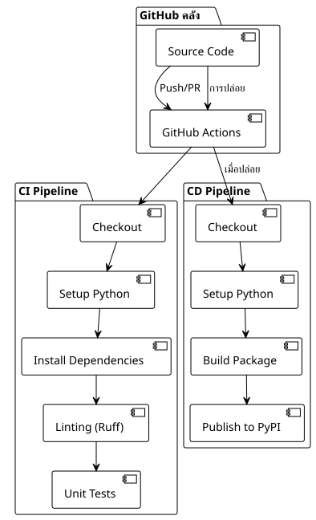

ส่วนที่ 1 : ตั้งค่าไพพ์ไลน์ CI/CD แบบง่ายสำหรับ Python และ PyPI
เผยแพร่เมื่อ 17 July 2025
บทนำ
การอัตโนมัติของกระบวนการพัฒนาได้กลายเป็นสิ่งที่ขาดไม่ได้ในโครงการสมัยใหม่ ระบบไพล์ไลน์ CI/CD ที่ออกแบบดีไม่เพียงแต่ช่วยตรวจจับการรีเกรสชันได้เร็วขึ้นในวัฏจักรการพัฒนาเท่านั้น แต่ยังทำให้กระบวนการปล่อยผลิตภัณฑ์ทั้งหมดเป็นอัตโนมัติอีกด้วย
ในบทความนี้เราจะสำรวจวิธีการตั้งค่าพลูไพน์ทั้งหมดโดยใช้ GitHub Actions สำหรับแอปพลิเคชัน Python ตั้งแต่การบูรณาการอย่างต่อเนื่อง (CI) ไปจนถึงการทำให้ใช้งานอย่างต่อเนื่อง (CD) บน PyPI
สถาปัตยกรรมของไปป์ไลน์
pipeline ของเราประกอบด้วย workflow ที่แตกต่างกันสองชุด :
-
CI ไปป์ไลน์: ทำงานทุกครั้งที่มีการ push และ pull request
-
CD ไปป์ไลน์ทำงานเฉพาะในการ release ของ GitHub

การตั้งค่าไพล์ไลน์ CI
โครงสร้างของเวิร์กฟล็อก CI
การทำงานของเวิร์กโฟลว์ CI ออกแบบมาเพื่อตรวจสอบความถูกต้องของการมีส่วนร่วมแต่ละครั้งในโค้ด นี่คือการกำหนดค่าที่สมบูรณ์ของมัน :
name: CI/CD Pipeline
on:
push:
branches:
- main
pull_request:
branches:
- main
jobs:
build:
runs-on: ubuntu-latest
steps:
- name: Checkout code
uses: actions/checkout@v4
- name: Set up Python
uses: actions/setup-python@v5
with:
python-version: '3.x'
- name: Install dependencies
run: |
python -m pip install --upgrade pip
pip install -r requirements.txt
pip install ruff pytest pytest-mock
- name: Run Linting (Ruff)
run: ruff check .
- name: Run Tests (Pytest)
run: pytestการวิเคราะห์ขั้นตอนของ CI
ตัวกระตุ้น (on)
----
on:
push:
branches:
- main
pull_request:
branches:
- main
----
Pipeline เริ่มทำงานเมื่อ : - ทุกการพุชบนสาขา`main` - แต่ละ pull request ไปที่`main`
วิธีการนี้รับประกันว่าโค้ดหลักจะยังคงเสถียรและการมีส่วนร่วมใด ๆ จะได้รับการตรวจสอบก่อนที่จะรวมเข้าด้วยกัน
==== สภาพแวดล้อมการทำงาน
```yaml
----
runs-on: ubuntu-latest
----
Ubuntu Latest นำเสนอสมดุลที่ดีระหว่างประสิทธิภาพ ต้นทุน และความเข้ากันได้สำหรับส่วนใหญ่ของโปรเจกต์ Python
==== 3. การเช็คเอาต์ของโค้ด
```yaml
----
- name: Checkout code
uses: actions/checkout@v4
----
การกระทำ`checkout@v4`ดึงซอร์สโค้ดจาก repository. เวอร์ชัน v4 มีการปรับปรุงด้านประสิทธิภาพและความปลอดภัย
==== 4. การตั้งค่า Python
```yaml
----
- name: Set up Python
uses: actions/setup-python@v5
with:
python-version: '3.x'
----
การใช้งานของ`'3.x'`ทำให้สามารถใช้งานเวอร์ชันล่าสุดที่เสถียรของ Python 3 ได้โดยอัตโนมัติ ลดความยุ่งยากในการบำรุงรักษา
==== 5. การติดตั้งการพึ่งพา
```yaml
----
- name: Install dependencies
run: |
python -m pip install --upgrade pip
pip install -r requirements.txt
pip install ruff pytest pytest-mock
----
ขั้นตอนนี้: - อัปเดต pip ไปยังเวอร์ชันล่าสุด ติดตั้งการพึ่งพาของโครงการ - เพิ่มเครื่องมือการพัฒนา (การตรวจสอบและการทดสอบ)
==== 6. การทำ lint ด้วย Ruff
```yaml
----
- name: Run Linting (Ruff)
run: ruff check .
----
**รัฟฟ์**เป็นเครื่องมือลินท์ Python ที่ทำงานได้อย่างรวดเร็วมาก ซึ่งเขียนด้วย Rust และรวมฟีเจอร์ของหลายๆ เครื่องมือ (Flake8, Black, isort) ไว้ในเครื่องมือเดียวที่มีประสิทธิภาพ。
==== การดำเนินการทดสอบ
```yaml
----
- name: Run Tests (Pytest)
run: pytest
----
Pytest ทำการรันทดสอบทั้งชุด เพื่อรับประกันว่าการเปลี่ยนแปลงไม่ทำให้เกิดการถดถอย.
== การตั้งค่าไพพ์ไลน์การปรับใช้ (CD)
=== โครงสร้างของ Workflow CD
เวิร์กโฟลว์ CD จะทำงานเฉพาะเมื่อมีการเปิดตัว release บน GitHub และทำให้การเผยแพร่บน PyPI เป็นอัตโนมัติ :
[source,yaml]
----
name: Publish to PyPI
on:
release:
types:
- published
jobs:
deploy:
runs-on: ubuntu-latest
steps:
- name: Checkout code
uses: actions/checkout@v4
- name: Set up Python
uses: actions/setup-python@v5
with:
python-version: '3.x'
- name: Install dependencies
run: |
python -m pip install --upgrade pip
pip install setuptools wheel twine
- name: Build and publish
env:
TWINE_USERNAME: __token__
TWINE_PASSWORD: ${{ secrets.PYPI_API_TOKEN }}
run: |
python setup.py sdist bdist_wheel
twine upload dist/*
----
=== การวิเคราะห์ขั้นตอน CD
==== 1. ทริกเกอร์ รีลีส
```yaml
----
on:
release:
types:
- published
----
พายป์ไลน์ CD จะทำงานเฉพาะเมื่อมีการเผยแพร่ release ของ GitHub เท่านั้น วิธีนี้ช่วยให้ควบคุมการปรับใช้ได้อย่างแม่นยำ
==== 2. การติดตั้งเครื่องมือการสร้าง
```yaml
----
pip install setuptools wheel twine
----
- **setuptools**เครื่องมือแพ็กเกจของ Python - **ล้อ**รูปแบบการแจกจ่าย Python ที่ทันสมัย - **เชือก**เครื่องมือที่ปลอดภัยสำหรับอัปโหลดไปยัง PyPI
==== การตั้งค่าการพิสูจน์ตัวตน
```yaml
----
env:
TWINE_USERNAME: __token__
TWINE_PASSWORD: ${{ secrets.PYPI_API_TOKEN }}
----
การตรวจสอบความถูกต้องใช้โทเค็น API ของ PyPI ที่จัดเก็บเป็นความลับของ GitHub ซึ่งปลอดภัยกว่าการเข้าสู่ระบบด้วยข้อมูลประจำตัวแบบดั้งเดิม
==== 4. สร้างและเผยแพร่
```yaml
----
run: |
python setup.py sdist bdist_wheel
twine upload dist/*
----
- `sdist`สร้างการกระจายซอร์ส - `bdist_wheel`สร้าง Wheel (การแจกจ่ายแบบไบนารี) - `twine upload`เผยแพร่การกระจายบน PyPI
== การตั้งค่าแพ็คเกจ Python
=== โครงสร้างของไฟล์ setup.py
เพื่อให้ pipeline ทำงานได้ โครงการของคุณต้องรวมไฟล์`setup.py`:
[source,python]
----
from setuptools import setup, find_packages
with open("README.adoc", "r", encoding="utf-8") as fh:
long_description = fh.read()
setup(
name="playlist-downloader",
version="1.0.0",
author="Votre Nom",
author_email="votre.email@example.com",
description="CLI tool for managing YouTube playlists",
long_description=long_description,
long_description_content_type="text/plain",
url="https://github.com/cheroliv/playlist-downloader",
packages=find_packages(),
classifiers=[
"Development Status :: 4 - Beta",
"Intended Audience :: Developers",
"License :: OSI Approved :: MIT License",
"Operating System :: OS Independent",
"Programming Language :: Python :: 3",
"Programming Language :: Python :: 3.8",
"Programming Language :: Python :: 3.9",
"Programming Language :: Python :: 3.10",
"Programming Language :: Python :: 3.11",
],
python_requires=">=3.8",
install_requires=[
"typer>=0.9.0",
"yt-dlp>=2023.1.6",
"google-api-python-client>=2.70.0",
"google-auth-oauthlib>=0.7.1",
"pymonad>=2.4.0",
"pyyaml>=6.0",
],
entry_points={
"console_scripts": [
"playlist-downloader=cli:app",
],
},
)
----
=== จุดสำคัญของ setup.py
1. **เมตาดาต้า**ชื่อ, เวอร์ชัน, ผู้แต่ง, คำอธิบาย
2. **การพึ่งพา**รายการแพ็กเกจที่ต้องการ
3. **จุดเข้า**: คำสั่ง CLI ที่เปิดเผย
4. **ตัวจำแนก**เมทาดาท่าสำหรับ PyPI
== การรักษาความปลอดภัยโดยใช้ GitHub Secrets
=== การตั้งค่าโทเค็น PyPI
1. **สร้างโทเค็น API บน PyPI**(output nothing)
- เข้าสู่ระบบที่ PyPI - ไปที่ การตั้งค่าบัญชี > เอพีไอ โทเค็น - สร้างโทเค็นใหม่ที่มีสิทธิ์อนุญาตที่เหมาะสม
1. **เพิ่มความลับใน GitHub**:
การตั้งค่าที่เก็บ > ความลับและตัวแปร > การกระทำ สร้างความลับใหม่ที่ชื่อ`PYPI_API_TOKEN` - วางโทเค็น PyPI ของคุณ
[plantuml, secrets-flow, svg]
----
@startuml
!theme plain
actor Developer as dev
participant "GitHub Repository" as repo
participant "GitHub Actions" as actions
participant PyPI
dev -> repo : ตั้งค่า PYPI_API_TOKEN ความลับ
repo -> actions : ทริกเกอร์ Pipeline CD ในการปล่อย
actions -> actions : เข้าถึงความลับอย่างปลอดภัย
actions -> PyPI : ยืนยันตัวตนด้วยโทเค็น
PyPI -> PyPI : ตรวจสอบและเผยแพร่แพ็กเกจ
note over actions, PyPI
โทเค็นไม่ได้ถูกเปิดเผยในบันทึก
สามารถทำการหมุนอัตโนมัติได้
end note
@enduml
----
== เวิร์กโฟลว์การปรับใช้อย่างสมบูรณ์
=== ลำดับการปรับใช้
[plantuml, deployment-sequence, svg]
----
@startuml
!theme plain
actor Developer as dev
participant "คลัง Git ท้องถิ่น" as git
participant "GitHub" as github
participant "GitHub การดำเนินการ" as actions
participant PyPI
participant "ผู้ใช้ปลายทาง" as users
dev -> git : git tag v1.0.0
dev -> git : git push origin v1.0.0
git -> github : ดันแท็ก
dev -> github : สร้างเวอร์ชันจากแท็ก
github -> actions : ทริกเกอร์ pipeline CD
actions -> actions : โค้ดเช็คเอาต์
actions -> actions : ตั้งค่าสภาพแวดล้อม Python
actions -> actions : ติดตั้งเครื่องมือสร้าง
actions -> actions : สร้างการกระจาย (sdist + wheel)
actions -> PyPI : Upload to PyPI with token
PyPI -> PyPI : ตรวจสอบและเผยแพร่
users -> PyPI : pip ติดตั้ง playlist-downloader
note over dev, github
สามารถทำให้การสร้าง Release เป็นแบบอัตโนมัติได้
หรือทำด้วยตนเองผ่าน UI ของ GitHub
end note
@enduml
----
=== สถานะของ Pipeline
[plantuml, pipeline-states, svg]
----
@startuml
!theme plain
[*] --> Idle
Idle --> CI_Running : Push/PR created
CI_Running --> CI_Success : การตรวจสอบทั้งหมดผ่าน
CI_Running --> CI_Failed : Linting/Tests fail
CI_Success --> Idle : การควบรวมสำเร็จ
CI_Failed --> Idle : แก้ไขและลองใหม่
Idle --> CD_Running : ได้เผยแพร่แล้ว
CD_Running --> CD_Success : แพ็คเกจเผยแพร่
CD_Running --> CD_Failed : สร้าง/Upload ข้อผิดพลาด
CD_Success --> Idle : แพคเกจมีอยู่บน PyPI
CD_Failed --> Idle : แก้ไขแล้วลองทำการเผยแพร่อีกครั้ง
note on link #red : บล็อกรวม
note on link #green : อนุญาตให้ปรับใช้
@enduml
----
== แนวทางปฏิบัติที่ดีและการเพิ่มประสิทธิภาพ
=== การจัดการเวอร์ชัน
ใช้แท็ก Git แบบเซมานติก:
```bash
----
git tag -a v1.2.3 -m "Release version 1.2.3"
git push origin v1.2.3
----
=== 2. การทดสอบเมทริกซ์
ทดสอบบนหลายเวอร์ชันของ Python :
```yaml
----
strategy:
matrix:
python-version: [3.8, 3.9, "3.10", "3.11"]
----
=== แคชของการพึ่งพา
เร่งความเร็วของการสร้างด้วยแคช :
```yaml
----
- name: Cache pip dependencies
uses: actions/cache@v3
with:
path: ~/.cache/pip
key: ${{ runner.os }}-pip-${{ hashFiles('**/requirements.txt') }}
----
=== 4. สภาพแวดล้อมการปรับใช้
ใช้สภาพแวดล้อมของ GitHub เพื่อการปรับใช้ที่ควบคุมได้ :
```yaml
----
jobs:
deploy:
environment: production
runs-on: ubuntu-latest
----
== กรณีการใช้งานและสถาปัตยกรรม
=== แผนภาพกรณีการใช้งาน
[plantuml, use-cases, svg]
----
@startuml
!theme plain
left to right direction
actor "นักพัฒนา" as dev
actor "GitHub การดำเนินการ" as ga
actor "ผู้ใช้ปลายทาง" as user
package "CI/CD ระบบ" {
usecase "เรียกใช้ลินท์" as lint
usecase "เรียกใช้การทดสอบ" as test
usecase "สร้างแพ็กเกจ" as build
usecase "เผยแพร่ไปยัง PyPI" as publish
usecase "สร้างรีลีส" as release
}
dev --> lint : ผลักดันโค้ด
dev --> test : ผลักโค้ด
dev --> release : สร้างการเผยแพร่
ga --> build : เมื่อปล่อยทริกเกอร์
ga --> publish : หลังจากการบิลด์สำเร็จ
user --> publish : แพ็คเกจดาวน์โหลด
lint .> test : triggers
test .> build : on success
build .> publish : on success
@enduml
----
=== สถาปัตยกรรมการปรับใช้
[plantuml, deployment-architecture, svg]
----
@startuml
!theme plain
cloud "GitHub" {
[Source Repository]
[GitHub Actions]
[Secrets Store]
}
cloud "PyPI" {
[Package Registry]
[Distribution Files]
}
node "CI/CD ท่อส่ง" {
[Linting]
[Testing]
[Building]
[Publishing]
}
[Source Repository] --> [GitHub Actions] : Triggers
[GitHub Actions] --> [Linting]
[Linting] --> [Testing]
[Testing] --> [Building]
[Building] --> [Publishing]
[Publishing] --> [Package Registry] : Uploads
[Secrets Store] --> [Publishing] : Provides token
note as N1
ปลอดภัย อิงตามโทเค็น
การตรวจสอบสิทธิ์
end note
[Secrets Store] .. N1
@enduml
----
== การเฝ้าติดตามและการดีบัก
=== บันทึกและการตรวจสอบ
GitHub Actions มีบันทึกที่มีรายละเอียดครบถ้วนสำหรับแต่ละขั้นตอน สำหรับดีบัก：
1. **ตรวจสอบบันทึก**ของแต่ละขั้นตอน
2. **เปิดใช้งานดีบั๊ก**กับ`ACTIONS_STEP_DEBUG`
3. **ใช้ artifacts**เพื่อสำรองไฟล์ build
```yaml
----
- name: Upload build artifacts
uses: actions/upload-artifact@v3
if: failure()
with:
name: build-logs
path: build/
----
=== การแจ้งเตือน
เพิ่มการแจ้งเตือนจาก Slack หรืออีเมล :
```yaml
----
- name: Notify on failure
if: failure()
uses: 8398a7/action-slack@v3
with:
status: ${{ job.status }}
webhook_url: ${{ secrets.SLACK_WEBHOOK }}
----
== สรุป
การตั้งค่าปิเปลไน์ CI/CD ที่แข็งแกร่งโดยใช้ GitHub Actions ทำให้ประสบการณ์การพัฒนาเปลี่ยนแปลงไปอย่างมาก เมื่อทำ lint, การทดสอบ และการปรับใช้ให้เป็นอัตโนมัติ คุณ :
- **ลดข้อผิดพลาด**ในการผลิต - **เร่งวัฏจักร**ของการพัฒนา - **ปรับปรุงความเชื่อมั่น**ในรีลีสของคุณ - **อำนวยความสะดวกให้กับการทำงานร่วมกัน**เป็นทีม
pipeline นี้สามารถปรับให้เหมาะกับโครงการ Python ประเภทต่าง ๆ ได้โดยการปรับเปลี่ยนเครื่องมือ linting เฟรมเวิร์กการทดสอบ หรือปลายทางการใช้งาน.
การลงทุนเริ่มต้นในการตั้งค่าเวิร์กโฟลว์เหล่านี้จะให้ผลตอบแทนอย่างรวดเร็วจากการประหยัดเวลาและลดข้อผิดพลาดด้วยมือระหว่างการปรับใช้
== ทรัพยากรเพิ่มเติม
- https://docs.github.com/en/actions[เอกสาร GitHub Actions] - https://packaging.python.org/[คู่มือแพ็กเกจไพทอนุญาต] - https://docs.pytest.org/[เอกสาร Pytest] - https://docs.astral.sh/ruff/[เอกสาร Ruff] - https://twine.readthedocs.io/[เอกสาร Twine]
เส้นท่อทำงานได้ ! แล้วคุณก็จะมีไพปล์ไลน์ CI/CD เรียบง่ายที่ช่วยให้คุณสามารถทำการทดสอบแบบอัตโนมัติและเผยแพร่แพ็คเกจไพธอนของคุณบน PyPI ได้โดยตรงจาก GitHub Actions
อย่างไรก็ตาม ไปป์ไลน์นี้ยังคงถูกออกแบบให้เป็นแบบเรียบง่ายโดยเจตนา ยังไม่ครอบคลุมบางแง่มุมที่จำเป็นในบริบทวิชาชีพ:
การทดสอบหลายเวอร์ชันของ Python,
การวิเคราะห์ความปลอดภัยอัตโนมัติ,
การปรับใช้แบบค่อยเป็นค่อยไปผ่าน Test PyPI,
การเฝ้าติดตามและเมตริกของไปป์ไลน์,
การอัตโนมัติของการจัดการเวอร์ชันและการบูรณาการแนวทางปฏิบัติที่ทันสมัย (pyproject.toml)
ในส่วนถัดไป เราจะก้าวไปสู่ขั้นต่อไป คุณจะได้เรียนรู้วิธีเปลี่ยนพาย์ไลน์พื้นฐานนี้ให้เป็นห่วงโซ่การติดตั้งใช้งานอุตสาหกรรมที่แท้จริง มีความแข็งแกร่งและปลอดภัย พร้อมสำหรับโครงการ Python ในการผลิต